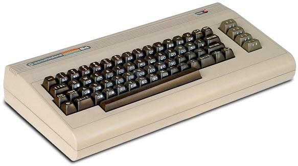
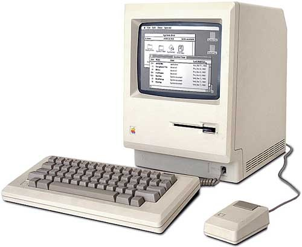

|  |  |
Mikrobilgisayarlar geliştikçe daha kolay kullanılabilir hale geldi ve ışıklar ve düğmelerden ibaret olan kutu bilgisayarların yerini klavye,monitör ve mouse’dan oluşan günümüz bilgisayarlarının ataları aldı.Binary (0 ve 1 lerden oluşan ikilik sistem) kod bilmek zorunluluğu ortadan kalktı ve daha anlaşılabilir programlara yerini bıraktı.1977 yılında tüm zamanların en popüler bilgisayarlarından olan Apple II üretildi, aslında Apple I‘den çok fazla üstün olmasa da 6 renk destekleyen monitörü, klavyesi, floppy disk kontrolörleri ve 8 adet genişleme yuvası büyük bir fark yaratıyordu. Aynı zamanda Compucolor 8001 (1976)‘in ardından gelen Apple II ilk renkli bilgisayarlardan biriydi.Ancak Apple II’nin satış patlamasını asıl sağlayan 1979 yılından itibaren Apple II ile beraber gelen Excel programının atası olan VisiCalc idi. VisiCalc sayesinde kolaylıkla oluşturulan elektronik tablolar iş dünyası için bir çığır açmıştı ve sadece VisiCalc bile Apple II bilgisayarlar için bir tercih sebebiydi.Yine 1979 yılında piyasaya sürülen görünüşte daktiloyu andıran Atari 400 ve Atari 800 modelleri ise kullanıcılara programlama bilgisi olmadan sadece oyun kartuşlarını kullanarak oyun oynama imkanı sundu. Bu daha sonra gelecek oyun konsolları için ilham kaynağı olacaktı.1981 yılı ise taşınabilir bilgisayarlar için önemli bir yıldı, daha önce “taşınabilir bilgisayar” etiketiyle bazı bilgisayarlar (22 kiloluk IBM 5100 veya sadece 10 adet üretilen Xerox Notetaker gibi) piyasaya sürüldüyse de gerçek anlamda taşınabilir olmadıkları ve yeterince ergonomik olmadıkları için piyasada tutunamadılar. Ancak 1981 yılında piyasaya sürülen Osborne 1 bilgisayar sonunda şeytanın bacağını kırmayı başardı ve ticari olarak başarı sağlayan ilk taşınabilir bilgisayar oldu.11 kilogramlık Osborne1 üreticilerinin anlattığına göre ne devrimsel özellikler taşıyordu ne de mükemmel bir hıza sahipti, sadece yeterince iyi bir üründü. 5 inçlik ekrana sahip bu bilgisayarın fişini çekip, klavyesini kapattıktan sonra kulbundan tutup dilediğiniz yere götürebiliyordunuz hatta bir gazetecinini köşe yazısında belirttiği üzere uçakta koltuğunuzun altına bile sığabilecek küçüklükteydi.Yukarıda gördüğünüz klavye görünümlü kutucuk aslında bir Commodore 64. Commodore 64 dünya genelindeki 17 milyonluk satış rakamıyla, firmanın 1993 yıllık raporuna göre dünyanın gelmiş geçmiş (günümüz dahil) en çok satan bilgisayar sistemi. Zamanının şartlarına göre yüksek çözünürlüğü destekleyen 2 görüntü modu, sayısız grafiksel özellik ve 3 kompleks ses kanalıyla mükemmel bir oyun bilgisayarı olmanın yanısıra aynı zamanda müzikle uğraşanlar için de ideal bir sistemdi.Ayrıca Commodore sağladığı ucuz modemlerle internet öncesi kullanılan Bulletin Board adlı forumlara, sohbet, download ve online oyun amaçlı erişimi mümkün kılıyordu.Belkide ilk nesil laptoplardan en şanslı olanı aslen işyerlerindeki yöneticilere hitaben geliştirilmiş GRiD Compass 1101 laptoplardı. 1983 yılında üretimine başlanan bu şanslı laptoplar hem Amerikan ordusu tarafından hem de NASA tarafından uzay mekiklerinde kullanılıyordu. Sadece 4,5kg ağırlığındaki bu laptoplar 8Mhz hızında Intel 8086 işlemci ve 256K RAM içeriyordu.1984 yılının Ocak ayında Apple Macintosh‘un piyasaya sürülmesi ile kişisel bilgisayarların evrimi son aşamasına geçiyordu. Apple Macintosh kendisinden önce gelen yazı-tabanlı yani sürekli siyah bir ekranda komutlar girerek kullandığınız bilgisayarları mouse aracılığıyla kullanılan Grafiksel Kullanıcı Arayüzü (GUI) ile tarihe gömüyordu.